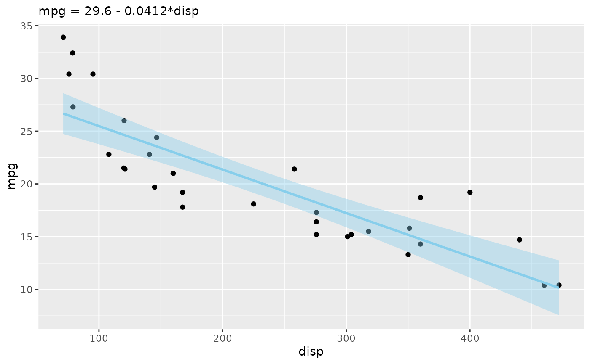
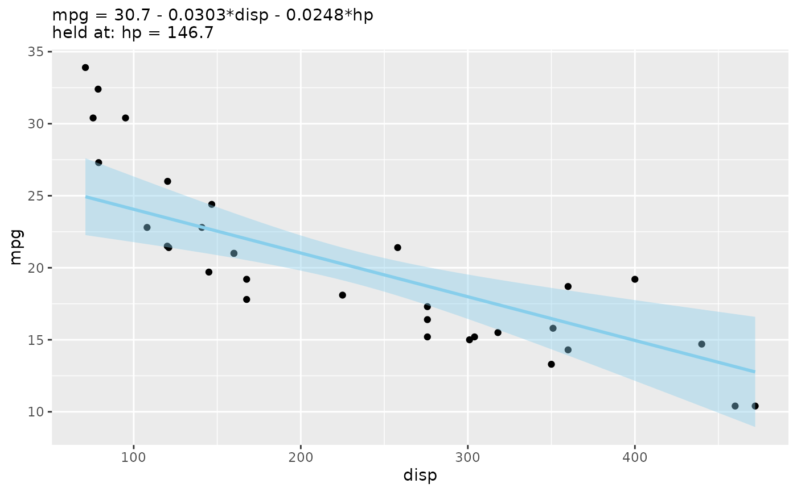
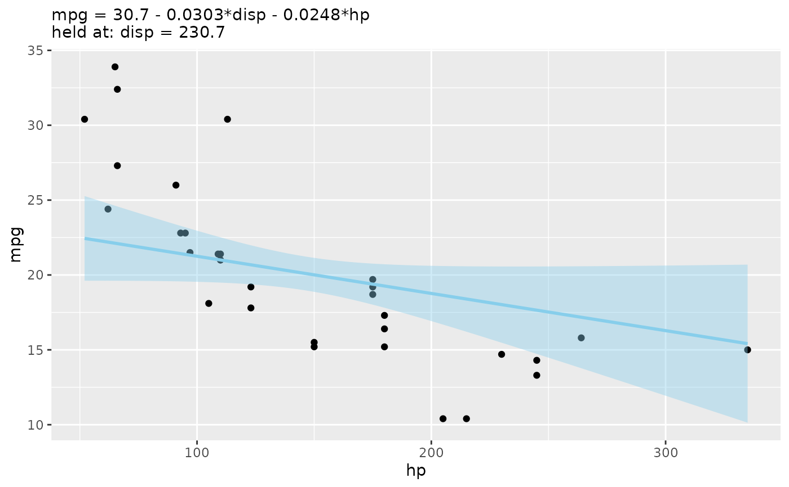
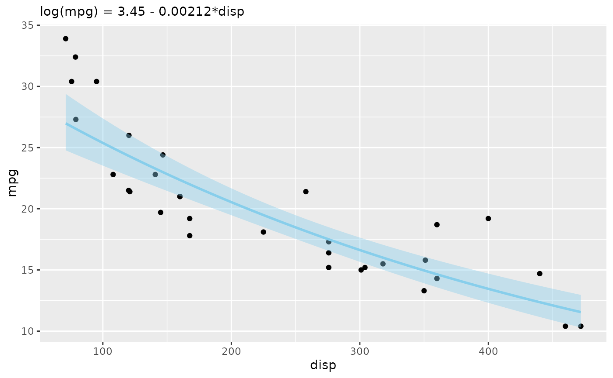
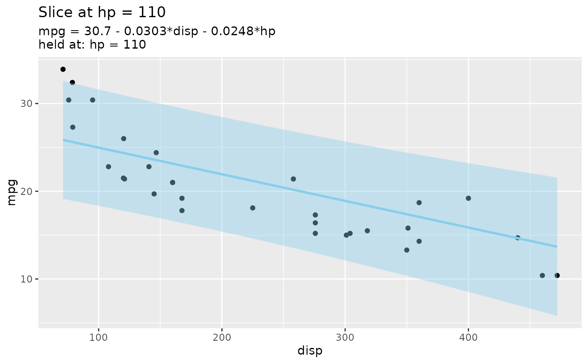
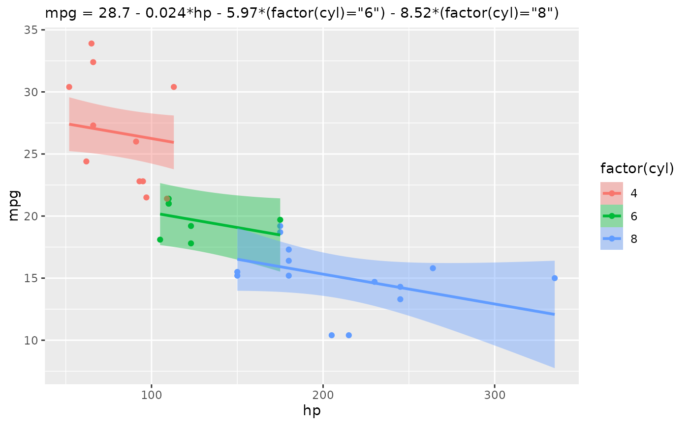

autoplot() turns a fitted lm() into a complete ggplot in one call: the
data the model was fitted to as a scatter, with a geom_slice() prediction
line — and, by default, its confidence ribbon — through it. The result is a
regular ggplot, so it can be extended with + as usual (labels, scales,
more layers).
Arguments
- object
A linear model fitted by
lm()with adataargument — the data is recovered from the model, solm(y ~ x, data = your_data)works butlm(your_data$y ~ your_data$x)does not.- mapping
Aesthetics created with
ggplot2::aes(), passed toggplot2::ggplot()— for examplemapping = aes(color = factor(cyl)). They resolve against the model's full data frame, so a column the model never mentions (such ascylabove) still works. An entry namedxchooses the x-axis (mapping = aes(x = hp)), overriding the default first numeric predictor; an entry namedyoverrides the response axis.- type
"2d"(default) for ageom_slice()ggplot, or"3d"for an interactivescatter_3d()surface (needs exactly two numeric predictors).- summary
Whether to print
summary(object)to the console before returning the plot (defaultTRUE). Printing it up front means you can refit the model and inspect its coefficients from inside the sameautoplot()call; passsummary = FALSEto suppress it.- interval
The ribbon drawn around the slice line, passed to
geom_slice():"confidence"(default) for the mean's confidence interval,"prediction"for a single new observation's interval, or"none"for a bare line. Ignored whentype = "3d".- ...
Passed on to
geom_slice()— for examplepredict_vars = list(hp = 110)to choose the slice, or fixed aesthetics such ascolor = "red"— or toscatter_3d()whentype = "3d".
Value
A ggplot of the model's data with a slice of the model drawn
through it, or — when type = "3d" — a plotly surface from scatter_3d().
Details
Pass type = "3d" for a model with exactly two numeric predictors to get an
interactive scatter_3d() surface instead of the 2-D slice; ... is then
forwarded to scatter_3d() (e.g. n, colors).
The model's first numeric predictor goes on the x-axis (override with
mapping = aes(x = ...)) and the raw response variable goes on the y-axis.
A predictor that groups into a few discrete lines rather than varying
continuously — non-numeric, or numeric with at most five distinct values
(like cyl's 4/6/8) — is worth showing, not holding at one value: the first
such predictor not already on the plot becomes aes(color = ...) (one slice
line per level) and a second one facets the plot. Everything past that
is handled by geom_slice() and reported on the console: predictors not
visible on the plot are imputed (mean for numeric, most common value for
factor/character), and a transformed response such as lm(log(y) ~ x) is
automatically back-transformed to match the raw y-axis.
See also
geom_slice(), which draws the line and handles everything
slice-shaped; scatter_3d() for the interactive surface; and
geom_slice_subtitle() / geom_slice_text() to annotate the result.
Examples
library(ggplot2)
# A complete plot from a model in one call
autoplot(lm(mpg ~ disp, data = mtcars))
#>
#> Call:
#> lm(formula = mpg ~ disp, data = mtcars)
#>
#> Residuals:
#> Min 1Q Median 3Q Max
#> -4.8922 -2.2022 -0.9631 1.6272 7.2305
#>
#> Coefficients:
#> Estimate Std. Error t value Pr(>|t|)
#> (Intercept) 29.599855 1.229720 24.070 < 2e-16 ***
#> disp -0.041215 0.004712 -8.747 9.38e-10 ***
#> ---
#> Signif. codes: 0 ‘***’ 0.001 ‘**’ 0.01 ‘*’ 0.05 ‘.’ 0.1 ‘ ’ 1
#>
#> Residual standard error: 3.251 on 30 degrees of freedom
#> Multiple R-squared: 0.7183, Adjusted R-squared: 0.709
#> F-statistic: 76.51 on 1 and 30 DF, p-value: 9.38e-10
#>

# Predictors not on the plot are imputed (a message says how)
autoplot(lm(mpg ~ disp + hp, data = mtcars))
#>
#> Call:
#> lm(formula = mpg ~ disp + hp, data = mtcars)
#>
#> Residuals:
#> Min 1Q Median 3Q Max
#> -4.7945 -2.3036 -0.8246 1.8582 6.9363
#>
#> Coefficients:
#> Estimate Std. Error t value Pr(>|t|)
#> (Intercept) 30.735904 1.331566 23.083 < 2e-16 ***
#> disp -0.030346 0.007405 -4.098 0.000306 ***
#> hp -0.024840 0.013385 -1.856 0.073679 .
#> ---
#> Signif. codes: 0 ‘***’ 0.001 ‘**’ 0.01 ‘*’ 0.05 ‘.’ 0.1 ‘ ’ 1
#>
#> Residual standard error: 3.127 on 29 degrees of freedom
#> Multiple R-squared: 0.7482, Adjusted R-squared: 0.7309
#> F-statistic: 43.09 on 2 and 29 DF, p-value: 2.062e-09
#>
#> Value for `hp` not specified - Used mean: 146.7
#> To choose a slice, use 'predict_vars = list(hp = 146.7)'.

# Choose which predictor goes on the x-axis
autoplot(lm(mpg ~ disp + hp, data = mtcars), mapping = aes(x = hp))
#>
#> Call:
#> lm(formula = mpg ~ disp + hp, data = mtcars)
#>
#> Residuals:
#> Min 1Q Median 3Q Max
#> -4.7945 -2.3036 -0.8246 1.8582 6.9363
#>
#> Coefficients:
#> Estimate Std. Error t value Pr(>|t|)
#> (Intercept) 30.735904 1.331566 23.083 < 2e-16 ***
#> disp -0.030346 0.007405 -4.098 0.000306 ***
#> hp -0.024840 0.013385 -1.856 0.073679 .
#> ---
#> Signif. codes: 0 ‘***’ 0.001 ‘**’ 0.01 ‘*’ 0.05 ‘.’ 0.1 ‘ ’ 1
#>
#> Residual standard error: 3.127 on 29 degrees of freedom
#> Multiple R-squared: 0.7482, Adjusted R-squared: 0.7309
#> F-statistic: 43.09 on 2 and 29 DF, p-value: 2.062e-09
#>
#> Value for `disp` not specified - Used mean: 230.7
#> To choose a slice, use 'predict_vars = list(disp = 230.7)'.

# Transformed response, back-transformed onto the raw mpg axis
autoplot(lm(log(mpg) ~ disp, data = mtcars))
#>
#> Call:
#> lm(formula = log(mpg) ~ disp, data = mtcars)
#>
#> Residuals:
#> Min 1Q Median 3Q Max
#> -0.21183 -0.10837 -0.04732 0.08251 0.35546
#>
#> Coefficients:
#> Estimate Std. Error t value Pr(>|t|)
#> (Intercept) 3.445548 0.054290 63.47 < 2e-16 ***
#> disp -0.002115 0.000208 -10.17 3.1e-11 ***
#> ---
#> Signif. codes: 0 ‘***’ 0.001 ‘**’ 0.01 ‘*’ 0.05 ‘.’ 0.1 ‘ ’ 1
#>
#> Residual standard error: 0.1435 on 30 degrees of freedom
#> Multiple R-squared: 0.7751, Adjusted R-squared: 0.7676
#> F-statistic: 103.4 on 1 and 30 DF, p-value: 3.095e-11
#>
#> Predictions of `log(mpg)` were back-transformed to match the `mpg` axis.
#> To turn this off, use 'back_transform = FALSE'.

# Options pass through to geom_slice(); the result is a normal ggplot
autoplot(lm(mpg ~ disp + hp, data = mtcars),
predict_vars = list(hp = 110), interval = "prediction") +
labs(title = "Slice at hp = 110")
#>
#> Call:
#> lm(formula = mpg ~ disp + hp, data = mtcars)
#>
#> Residuals:
#> Min 1Q Median 3Q Max
#> -4.7945 -2.3036 -0.8246 1.8582 6.9363
#>
#> Coefficients:
#> Estimate Std. Error t value Pr(>|t|)
#> (Intercept) 30.735904 1.331566 23.083 < 2e-16 ***
#> disp -0.030346 0.007405 -4.098 0.000306 ***
#> hp -0.024840 0.013385 -1.856 0.073679 .
#> ---
#> Signif. codes: 0 ‘***’ 0.001 ‘**’ 0.01 ‘*’ 0.05 ‘.’ 0.1 ‘ ’ 1
#>
#> Residual standard error: 3.127 on 29 degrees of freedom
#> Multiple R-squared: 0.7482, Adjusted R-squared: 0.7309
#> F-statistic: 43.09 on 2 and 29 DF, p-value: 2.062e-09
#>

# Extra aesthetics for the scatter (mapping goes to ggplot())
autoplot(lm(mpg ~ hp + factor(cyl), data = mtcars),
mapping = aes(color = factor(cyl)))
#>
#> Call:
#> lm(formula = mpg ~ hp + factor(cyl), data = mtcars)
#>
#> Residuals:
#> Min 1Q Median 3Q Max
#> -4.818 -1.959 0.080 1.627 6.812
#>
#> Coefficients:
#> Estimate Std. Error t value Pr(>|t|)
#> (Intercept) 28.65012 1.58779 18.044 < 2e-16 ***
#> hp -0.02404 0.01541 -1.560 0.12995
#> factor(cyl)6 -5.96766 1.63928 -3.640 0.00109 **
#> factor(cyl)8 -8.52085 2.32607 -3.663 0.00103 **
#> ---
#> Signif. codes: 0 ‘***’ 0.001 ‘**’ 0.01 ‘*’ 0.05 ‘.’ 0.1 ‘ ’ 1
#>
#> Residual standard error: 3.146 on 28 degrees of freedom
#> Multiple R-squared: 0.7539, Adjusted R-squared: 0.7275
#> F-statistic: 28.59 on 3 and 28 DF, p-value: 1.14e-08
#>

# An interactive 3-D surface for a two-predictor model
if (interactive()) {
autoplot(lm(mpg ~ disp + hp, data = mtcars), type = "3d")
}